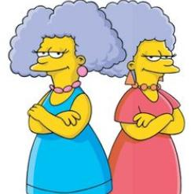

Marge's Family tree
Genealogy Page(Home)
Homer Family Gallery
Marge Family Gallery
Favorite Link1
Favorite Link2
Homer's Family List
Clancy Bouvier(Marge's dad)
Jacqueline Bouvier(Marge's mom
Patty and Selma Bouvier(identical twin sisters)

Lisa(daughter)
Bart(Me, handsome ain't I, if not then eat my shorts!)
Maggie(second daughter)